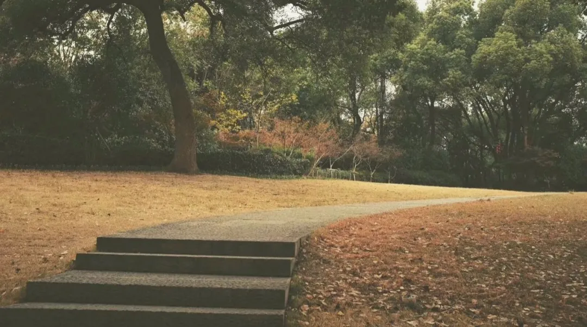
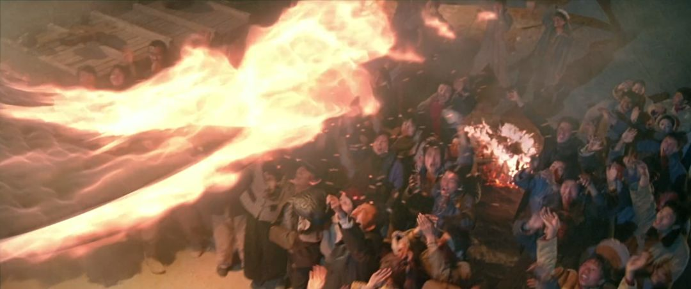
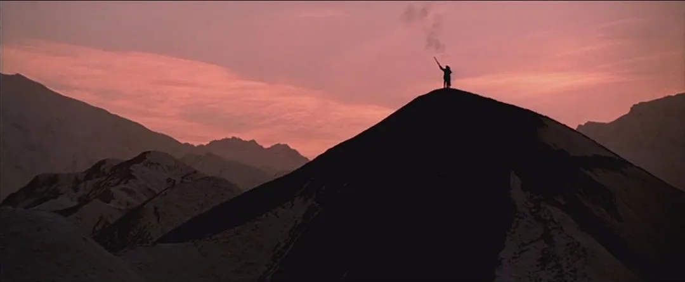
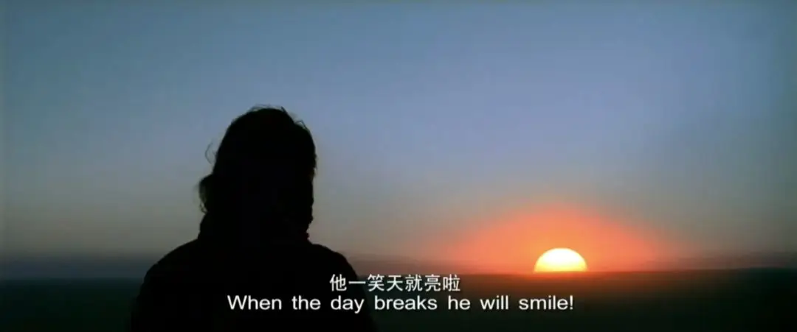

前言
每次看到这个标题，我就觉得今年会如同太阳照常升起一般，不知不觉中恢复正常。
多年之前，他躺在床上，自始至终都没料想到会拉个不太笨重的黑色皮箱，在人群中挤来挤去。地铁的关门声绕于耳边，尽管听了不少次，依旧显得格格不入；人群参差不齐，但都自成一体，个体间隔着等量的像素，有序排开来，除了色彩的搭配不令他满意以外，这简直就是张完美的设计图；
随着人群陆续涌出，又开始涌入，这是个换乘大站，伴随着春运，显得拥挤不堪。
他貌似不是自己在走，而是伴随着人群在流动。此行还有他的朋友，得意于出发地的迁移，同事和他一起回去，但只能同行一小段。高速发达的交通网络，自然而言，也就少了旅途的伙伴，除了川内人一家亲以外，这些年碰到的人大多沉默寡言，恨不得马上逃离这里。
在路上，也就成了一趟辛苦的差事。
可不停变动的陌生事物，对他而言，却有助于抽离原本的世界，重新审视自己。当然，他有在尝试写下一点东西。只要有时间，他总是会想起这一年所度过的荒诞不经的日子，甚至也在慢慢的怀疑其真实性，毕竟记忆这东西，解释起来很是麻烦，一旦和别人产生了矛盾，便更加难以证实。亦或者自己的主观意识总会放大某些情节，某个你喜欢的女生因为多看了你一眼，或许在你的记忆里，她就是喜欢你的。
所以乘着还有点儿意识，可以明明白白、马马虎虎的写下，也不至于过了不久后以为是做了个梦，这形容一点也不夸张，在他的世界里就时有发生；
20年1月 家乡小镇
他告诉自己想去世外桃源，来寻求一份与世隔绝的快乐
初三，他站在家门口，看着湿漉漉的天空，印象中这些天都是下着雨，倒不是有多讨厌，只是感觉这天气不该是这样。
能在记忆里显现的过年，大多都是晴天，可如今阴雨连绵，正月的大地已如一幅未干的油画，只是少了彩色行人的点缀，便显得沉重了不少，可西伯利亚的风吹到身上时，却丧失往日的怒劲，显得十分虚弱。
“这不该是这样，”他喃喃自语，脸色显得不太自然。
“人人都在窗口望着，你看到一双双眼睛，他们在窥视着，时不时又巡视着，每个人都有些异常，但除了少数爱照镜子和自拍的人，大多数是没有察觉的，他们只能看到别人的异常，碍于情面，连提醒都不曾会有。
一束光照在他的脸颊，隐隐约约的看着太阳高过对面的山顶线，貌似最近这一切都未曾发生过，像极了过年。
可还真是过年了...
人人都从外地赶回来，走动着，欢笑着，手里的瓜子嗑不完，嘴上的话也说不完。
他见到好几个调皮的小孩子拿着鞭炮到处跑，“噼里啪啦···”见到旁边邻居家的弟弟又长高了；见到了太阳底下的烟花往上窜，窜的老高了；见到了旺旺大礼包，里面有他最爱吃的摇一摇果冻。
他应该去找朋友玩，有好几个朋友都回来了，正坐在家里无聊来着，是该去见见了，唠唠嗑。对于朋友，他是真心的，这点毋庸置疑，街坊邻居都知道，并且时不时会给他打打广告，这样一来，就更加坚信自己确实是看重友谊的人了。想到这点，他心里很是舒畅，头也跟着摇起来了，正因为没有旁人在，才能显得如此尽兴。
可如果不是他妈叫醒了他，他应该可以见更多的朋友，能拥有一个更加完整的过年。比起在外出租屋的床，家里的显得宽敞舒服不少，地板一尘不染，窗户也面目一新，洁白的墙面上似乎不曾贴上过一张海报，但记忆中应该是写满了侠盗飞车的外挂，这里崭新的看起来就像是个陌生的地方。
“抓紧起床，快点”，他妈显得有些不耐烦了，随时都有可能掀起被子，“好咯，马上，马上”他并不喜欢睡懒觉，事实上有点讨厌，可还是心甘情愿的躺在床上，享受着前晚带来的余温。
拿个凳子跑到门外，看着这阳光，还真TM的真实，这大半年，他变得怕冷了不少，常常给自己裹的严严实实，如今太阳一晒，身子倒是暖和了不少。他望着太阳，努力睁开了一点点缝隙，但还是后悔了，强烈的刺激让他流了泪，也感到一阵子的晕眩。
正月的太阳，怎会如此强烈，大概是太久没怎么见着了，伴随着阵阵微风，眼睛稍微舒适了一点，这次算是看清了，太阳底下的街上依旧空无一人。
凝眸望去，峰峦起伏，清风扶过夏天遗留的浅水藕枝，他闭上眼，些许香气跑入鼻腔，像极了女孩子的秀发在前摇摆，他总是能从女孩子的香水味里将发香剥离出来，那比蒙着一层透明雪纺的ru fang，更令人着迷，想要一头栽进去就好，被其包抚，被其缠绕；这也成为了他逃避的一种方式，困于高度文明的社会制约，这变得更为高级，更为难得；
19年3月 南方城镇
意识觉醒后，却发现似乎并没有变好
一个怀念故乡的，满脸通红的，想不起事的，来到这个南方城市，至于是为什么要来到这，并不太清楚，他只知道来到这后，才有了20年1月份的自己存在；
三月天晴空万里，阳光照在身上，刺激着每一寸肌肤，她们呱呱大叫，谴责着主人不够爱惜她们。
他拉着个皮箱，里面带了些衣服。其实，他根本不想拉个皮箱的，原因很简单，粗暴的声音引人注目，他害羞极了，像是个异类。他很不喜欢别人成群结队的看着自己，殊不知几个月后的他也这样看着新来的同事，此情此景重复上演着。
“我们终将成为自己讨厌的人？”这TM的就是句废话，无非就是皮箱的声音吸引了他的耳朵，不自觉的多看了几眼罢了。
“呼呜、呼呜、呜呼···”
一趟列车缓慢在空中走过，载着满脸笑容的人群，显然，他们成了这个城市的主宰。
低头望去，眼前能看到的东西，无非就那几样，一排排的充斥着他的眼球，仿佛要爆炸。这些都是不久刚建的，整那样还挺新，正如那群乘坐空中列车的人们，染不得一点灰尘，他感受到了这个城镇文明的高度发达。
拿起自己的智能手机，他接了个不太智能的电话，是从不远的地方打来，短暂问候几句，就匆匆忙忙的挂了电话，尽管不远但见面倒是个难事，长久以来，对此就不太抱希望了。
想起几个月前，他还经历着一遍遍舒服的日子，每天可以想很多事，可以保持最佳的身体状况。从这头到那头，可以精确的计算着步数，从上到下，可以睡了又醒，从左到右，太阳照常升起，又照常落下；
他知道，这里将是个陌生的地方，陌生吗？非常陌生，环境构造无外乎那几个东西，但他知道这里找不到一个熟人，万一被欺负了咋办，撸起袖子跟人干，丢你老 mu 嘿？老子就是一砖头砸过去？这显然不是他的作风，他不敢，因为怕被反打，是真“疼”。唯独真把他惹急了，就成了亡命之徒，可那样又缺了些谋略，所以事过之后，被惹急做的种种事，都令其后悔不已。
想到这里，他已然走到了楼下，可不巧的是碰上了，没有太多准备，匆匆忙忙握过手，便开始了这一切。顺水成舟，他按照自己所知道的事情进行着；

19年11月 南方城镇
我幻想着多种结局，都是奔着最为理想的去
他独自饮酒浇愁，没人来劝；已经失去了自我意识，就谈不上所谓醒着的状态，那就是醉着把生活过，醉着上班，醉着吃饭，醉着睡觉，可他偏还喜欢这种状态。
一周内喝了不少次酒，伴随着音乐节的剧烈运动，身体的石头终于有所移动，疼痛不已，难以忘怀；
他倒不是有多少的害怕，只是突然觉得自己的身体貌似承受不了内心的所欲所求了。可轻快一点的歌有趣，烈一点的酒有趣，摇一摇你的头有趣，你能看到的是所有人都在尽情的跳着热舞，他真的看到了好多人，但都模糊不清，正努力往他们耳朵旁大叫：TMD，给老子变清楚，听见没有，快点！” ，但并没有人愿意，甚至没人理他，倦了，慢慢的失去焦点，他想找个凳子坐下，稍微缓一缓后再接着去试图看清他们，面前也确实是有好多个凳子，奇形怪状的，一个都坐不稳。
一屁股下去，他坐在了地上，脑袋里空空荡荡，貌似什么都没有发生···
再次睁开眼后，自己已经是躺在了床上，什么都记不住了。他选择暂时闭上双眼，因为睁眼会抑制想象，自然而然想起还有一堆糟心事在等着，就变得烦躁不安。事情倒都是小事，但就是烦躁，跺脚也没用，大叫也没用，很多人总说把其讲出来就好，但藏在心里的，只能靠偷。
他都构思好了，在某个喝醉的早晨，有那么点朝晖，他俩相拥在一起，感受着对方舌尖上的甜味，并敞开心扉，为此，那晚得喝点百利甜。
“你会相信平行时空吗？”
“会啊”
“在另一个时空的我如果是个女生，那我一定会爱上自己”
“为什么”
“因为我TM的太优秀了”
他也悄悄告诉自己：这就是最为理想的结局；
20年2月 家乡小镇
他妈开始说要吃午饭了，才发现，已坐一小时之久。他就是这么个人，记忆力不太好，经常忘记，原来能在一个地方待过很久，想了很多事。可每次都幻想着自己依然能发生变化，但这是一个无形的东西，当他一回头，就全忘了，你不信？那随你便。
毕竟脸晒的红彤彤，眼睛眯眯着，好久没见到这副模样了；低头看着手机里的数字还在增加，除了惊叹，我们做不了别的。每一个数字代表着一个人，虽然不曾相识，但平时都活跃在互联网的另一端，不可完全否认在漂流瓶内是否认识过，所以加油吧，为每个人加油；
昨天的天气预报说好下雨，今天刺眼的阳光告诉他：这是上天的一份礼物。
2007年，姜文在长达5年不能担任导演后，拍出了《太阳照常升起》；1926年，海明威的《太阳照常升起》首版；这两者并无联系，但在此时的他看来，这两者成了同时发生，同时发生在脑海里。
剧情开始变得混乱，甚至误以为这是小说改编的电影，还是电影改编的小说，这TM的都是胡扯，包括这篇文章的标题，电影都没怎么看懂，小说还没来得及看。那只能粗俗的借下这个“名字”，姑且就按照表面意思来吧；只能说你没懂，不能说你没看见，他看见了.
“太阳照常升起”，我们的脸依旧能晒的红彤彤，晒的特别美；除此并无他意······
